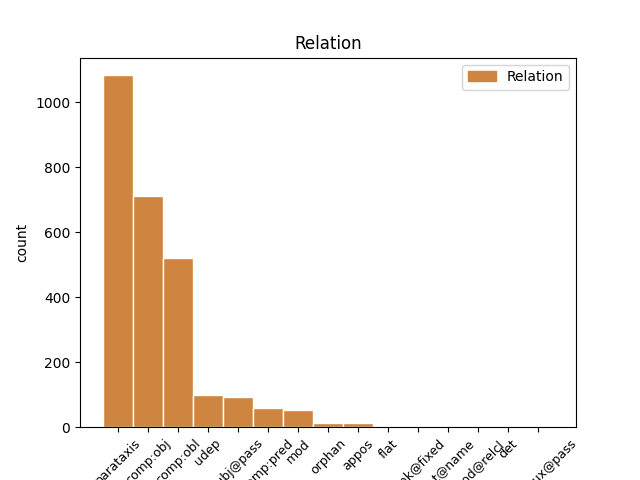
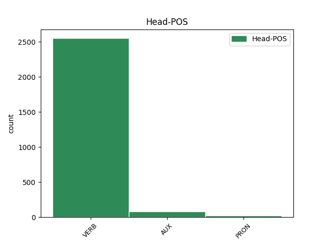
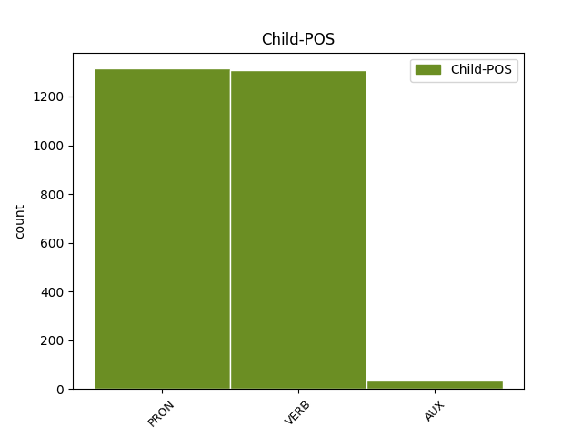

Distribution of features within this leaf



Agreement Rules sorted by frequency.
- When the dependent token is the parataxis(parataxis) of the head token,
1 А _ _ _ _ 0 _ _ _
2 может мочь VERB _ Aspect=Imp|Mood=Ind|Number=Sing|Person=3|Tense=Pres|VerbForm=Fin|Voice=Act 11 parataxis _ _
3 быть _ _ _ _ 0 _ _ _
4 , _ _ _ _ 0 _ _ _
5 кто-то _ _ _ _ 0 _ _ _
6 - _ _ _ _ 0 _ _ _
7 на _ _ _ _ 0 _ _ _
8 другом _ _ _ _ 0 _ _ _
9 конце _ _ _ _ 0 _ _ _
10 тоже _ _ _ _ 0 _ _ _
11 пробует пробовать VERB _ Aspect=Imp|Mood=Ind|Number=Sing|Person=3|Tense=Pres|VerbForm=Fin|Voice=Act 0 _ _ _
12 ее _ _ _ _ 0 _ _ _
13 расчистить _ _ _ _ 0 _ _ _
14 ? _ _ _ _ 0 _ _ _
1 Они _ _ _ _ 0 _ _ _
2 не _ _ _ _ 0 _ _ _
3 заботились _ _ _ _ 0 _ _ _
4 , _ _ _ _ 0 _ _ _
5 слушают слушать VERB _ Aspect=Imp|Mood=Ind|Number=Plur|Person=3|Tense=Pres|VerbForm=Fin|Voice=Act 0 _ _ _
6 их они PRON _ Case=Acc|Number=Plur|Person=3 5 comp:obj _ _
7 или _ _ _ _ 0 _ _ _
8 нет _ _ _ _ 0 _ _ _
9 . _ _ _ _ 0 _ _ _
1 Они _ _ _ _ 0 _ _ _
2 знали _ _ _ _ 0 _ _ _
3 , _ _ _ _ 0 _ _ _
4 что _ _ _ _ 0 _ _ _
5 им они PRON _ Case=Dat|Number=Plur|Person=3 7 comp:obl _ _
6 не _ _ _ _ 0 _ _ _
7 приходится приходиться VERB _ Aspect=Imp|Mood=Ind|Number=Sing|Person=3|Tense=Pres|VerbForm=Fin|Voice=Mid 0 _ _ _
8 ждать _ _ _ _ 0 _ _ _
9 милости _ _ _ _ 0 _ _ _
10 от _ _ _ _ 0 _ _ _
11 людей _ _ _ _ 0 _ _ _
12 , _ _ _ _ 0 _ _ _
13 что _ _ _ _ 0 _ _ _
14 не _ _ _ _ 0 _ _ _
15 для _ _ _ _ 0 _ _ _
16 них _ _ _ _ 0 _ _ _
17 выставлена _ _ _ _ 0 _ _ _
18 кормушка _ _ _ _ 0 _ _ _
19 , _ _ _ _ 0 _ _ _
20 и _ _ _ _ 0 _ _ _
21 брали _ _ _ _ 0 _ _ _
22 свое _ _ _ _ 0 _ _ _
23 с _ _ _ _ 0 _ _ _
24 бою _ _ _ _ 0 _ _ _
25 . _ _ _ _ 0 _ _ _
1 Я _ _ _ _ 0 _ _ _
2 скинул _ _ _ _ 0 _ _ _
3 рубашку _ _ _ _ 0 _ _ _
4 и _ _ _ _ 0 _ _ _
5 сложил _ _ _ _ 0 _ _ _
6 в _ _ _ _ 0 _ _ _
7 нее _ _ _ _ 0 _ _ _
8 грибы _ _ _ _ 0 _ _ _
9 , _ _ _ _ 0 _ _ _
10 радуясь _ _ _ _ 0 _ _ _
11 , _ _ _ _ 0 _ _ _
12 что _ _ _ _ 0 _ _ _
13 она она PRON _ Case=Nom|Gender=Fem|Number=Sing|Person=3 14 subj@pass _ _
14 будет быть AUX _ Aspect=Imp|Mood=Ind|Number=Sing|Person=3|Tense=Pres|VerbForm=Fin|Voice=Act 0 _ _ _
15 испорчена _ _ _ _ 0 _ _ _
16 и _ _ _ _ 0 _ _ _
17 бурые _ _ _ _ 0 _ _ _
18 , _ _ _ _ 0 _ _ _
19 несмываемые _ _ _ _ 0 _ _ _
20 пятна _ _ _ _ 0 _ _ _
21 навсегда _ _ _ _ 0 _ _ _
22 останутся _ _ _ _ 0 _ _ _
23 в _ _ _ _ 0 _ _ _
24 память _ _ _ _ 0 _ _ _
25 о _ _ _ _ 0 _ _ _
26 голосе _ _ _ _ 0 _ _ _
27 Верони _ _ _ _ 0 _ _ _
28 , _ _ _ _ 0 _ _ _
29 настигшем _ _ _ _ 0 _ _ _
30 меня _ _ _ _ 0 _ _ _
31 в _ _ _ _ 0 _ _ _
32 лесу _ _ _ _ 0 _ _ _
33 . _ _ _ _ 0 _ _ _
1 В _ _ _ _ 0 _ _ _
2 этом _ _ _ _ 0 _ _ _
3 послании _ _ _ _ 0 _ _ _
4 , _ _ _ _ 0 _ _ _
5 в _ _ _ _ 0 _ _ _
6 частности _ _ _ _ 0 _ _ _
7 , _ _ _ _ 0 _ _ _
8 говорилось _ _ _ _ 0 _ _ _
9 : _ _ _ _ 0 _ _ _
10 " _ _ _ _ 0 _ _ _
11 Хотя _ _ _ _ 0 _ _ _
12 церковь _ _ _ _ 0 _ _ _
13 Руси _ _ _ _ 0 _ _ _
14 уже _ _ _ _ 0 _ _ _
15 давно _ _ _ _ 0 _ _ _
16 отделена _ _ _ _ 0 _ _ _
17 от _ _ _ _ 0 _ _ _
18 лона _ _ _ _ 0 _ _ _
19 своей _ _ _ _ 0 _ _ _
20 матери _ _ _ _ 0 _ _ _
21 - _ _ _ _ 0 _ _ _
22 римской _ _ _ _ 0 _ _ _
23 церкви _ _ _ _ 0 _ _ _
24 ( _ _ _ _ 0 _ _ _
25 как _ _ _ _ 0 _ _ _
26 будто _ _ _ _ 0 _ _ _
27 бы _ _ _ _ 0 _ _ _
28 действительно _ _ _ _ 0 _ _ _
29 когда-то _ _ _ _ 0 _ _ _
30 Русь _ _ _ _ 0 _ _ _
31 была _ _ _ _ 0 _ _ _
32 в _ _ _ _ 0 _ _ _
33 лоне _ _ _ _ 0 _ _ _
34 Рима _ _ _ _ 0 _ _ _
35 ! _ _ _ _ 0 _ _ _
36 ) _ _ _ _ 0 _ _ _
37 , _ _ _ _ 0 _ _ _
38 папа _ _ _ _ 0 _ _ _
39 не _ _ _ _ 0 _ _ _
40 может _ _ _ _ 0 _ _ _
41 сдержать _ _ _ _ 0 _ _ _
42 в _ _ _ _ 0 _ _ _
43 себе _ _ _ _ 0 _ _ _
44 отцовских _ _ _ _ 0 _ _ _
45 чувств _ _ _ _ 0 _ _ _
46 к _ _ _ _ 0 _ _ _
47 православной _ _ _ _ 0 _ _ _
48 Руси _ _ _ _ 0 _ _ _
49 и _ _ _ _ 0 _ _ _
50 зовет звать VERB _ Aspect=Imp|Mood=Ind|Number=Sing|Person=3|Tense=Pres|VerbForm=Fin|Voice=Act 0 _ _ _
51 ее она PRON _ Case=Gen|Gender=Fem|Number=Sing|Person=3 50 udep _ _
52 к _ _ _ _ 0 _ _ _
53 себе _ _ _ _ 0 _ _ _
54 " _ _ _ _ 0 _ _ _
55 . _ _ _ _ 0 _ _ _
1 В _ _ _ _ 0 _ _ _
2 то _ _ _ _ 0 _ _ _
3 время _ _ _ _ 0 _ _ _
4 как _ _ _ _ 0 _ _ _
5 современные _ _ _ _ 0 _ _ _
6 производительные _ _ _ _ 0 _ _ _
7 силы _ _ _ _ 0 _ _ _
8 в _ _ _ _ 0 _ _ _
9 одних _ _ _ _ 0 _ _ _
10 странах _ _ _ _ 0 _ _ _
11 развиваются развиваться VERB _ Aspect=Imp|Mood=Ind|Number=Plur|Person=3|Tense=Pres|VerbForm=Fin|Voice=Mid 33 mod _ _
12 на _ _ _ _ 0 _ _ _
13 капиталистической _ _ _ _ 0 _ _ _
14 экономической _ _ _ _ 0 _ _ _
15 основе _ _ _ _ 0 _ _ _
16 ( _ _ _ _ 0 _ _ _
17 во _ _ _ _ 0 _ _ _
18 всяком _ _ _ _ 0 _ _ _
19 случае _ _ _ _ 0 _ _ _
20 последняя _ _ _ _ 0 _ _ _
21 дает _ _ _ _ 0 _ _ _
22 еще _ _ _ _ 0 _ _ _
23 для _ _ _ _ 0 _ _ _
24 них _ _ _ _ 0 _ _ _
25 определенный _ _ _ _ 0 _ _ _
26 стимул _ _ _ _ 0 _ _ _
27 ) _ _ _ _ 0 _ _ _
28 , _ _ _ _ 0 _ _ _
29 поступательное _ _ _ _ 0 _ _ _
30 движение _ _ _ _ 0 _ _ _
31 других _ _ _ _ 0 _ _ _
32 стран _ _ _ _ 0 _ _ _
33 осуществляется осуществляться VERB _ Aspect=Imp|Mood=Ind|Number=Sing|Person=3|Tense=Pres|VerbForm=Fin|Voice=Mid 0 _ _ _
34 в _ _ _ _ 0 _ _ _
35 рамках _ _ _ _ 0 _ _ _
36 социалистического _ _ _ _ 0 _ _ _
37 выбора _ _ _ _ 0 _ _ _
38 . _ _ _ _ 0 _ _ _
1 Не _ _ _ _ 0 _ _ _
2 зря _ _ _ _ 0 _ _ _
3 же _ _ _ _ 0 _ _ _
4 говорят говорить VERB _ Aspect=Imp|Mood=Ind|Number=Plur|Person=3|Tense=Pres|VerbForm=Fin|Voice=Act 0 _ _ _
5 : _ _ _ _ 0 _ _ _
6 на _ _ _ _ 0 _ _ _
7 ошибках _ _ _ _ 0 _ _ _
8 учатся учиться VERB _ Aspect=Imp|Mood=Ind|Number=Plur|Person=3|Tense=Pres|VerbForm=Fin|Voice=Mid 4 comp:pred _ SpaceAfter=No
9 . _ _ _ _ 0 _ _ _
1 Потом _ _ _ _ 0 _ _ _
2 органическая _ _ _ _ 0 _ _ _
3 фаза _ _ _ _ 0 _ _ _
4 отслаивается отслаиваться VERB _ Aspect=Imp|Mood=Ind|Number=Sing|Person=3|Tense=Pres|VerbForm=Fin|Voice=Mid 0 _ _ _
5 ( _ _ _ _ 0 _ _ _
6 она _ _ _ _ 0 _ _ _
7 не _ _ _ _ 0 _ _ _
8 смешивается смешиваться VERB _ Aspect=Imp|Mood=Ind|Number=Sing|Person=3|Tense=Pres|VerbForm=Fin|Voice=Mid 4 appos _ _
9 с _ _ _ _ 0 _ _ _
10 водой _ _ _ _ 0 _ _ _
11 ) _ _ _ _ 0 _ _ _
12 и _ _ _ _ 0 _ _ _
13 поступает _ _ _ _ 0 _ _ _
14 в _ _ _ _ 0 _ _ _
15 реэкстрактор _ _ _ _ 0 _ _ _
16 . _ _ _ _ 0 _ _ _
1 - _ _ _ _ 0 _ _ _
2 А _ _ _ _ 0 _ _ _
3 я _ _ _ _ 0 _ _ _
4 тебя _ _ _ _ 0 _ _ _
5 снегом _ _ _ _ 0 _ _ _
6 тру тереть VERB _ Aspect=Imp|Mood=Ind|Number=Sing|Person=1|Tense=Pres|VerbForm=Fin|Voice=Act 0 _ _ _
7 - _ _ _ _ 0 _ _ _
8 тру тереть VERB _ Aspect=Imp|Mood=Ind|Number=Sing|Person=1|Tense=Pres|VerbForm=Fin|Voice=Act 6 flat _ SpaceAfter=No
9 , _ _ _ _ 0 _ _ _
10 совсем _ _ _ _ 0 _ _ _
11 было _ _ _ _ 0 _ _ _
12 уши _ _ _ _ 0 _ _ _
13 отморозил _ _ _ _ 0 _ _ _
14 . _ _ _ _ 0 _ _ _
1 Сижу _ _ _ _ 0 _ _ _
2 со _ _ _ _ 0 _ _ _
3 старенькой _ _ _ _ 0 _ _ _
4 бабушкой _ _ _ _ 0 _ _ _
5 - _ _ _ _ 0 _ _ _
6 Мария _ _ _ _ 0 _ _ _
7 Ивановна _ _ _ _ 0 _ _ _
8 Тюленева _ _ _ _ 0 _ _ _
9 , _ _ _ _ 0 _ _ _
10 ей _ _ _ _ 0 _ _ _
11 92 _ _ _ _ 0 _ _ _
12 годка _ _ _ _ 0 _ _ _
13 , _ _ _ _ 0 _ _ _
14 и _ _ _ _ 0 _ _ _
15 спрашиваю _ _ _ _ 0 _ _ _
16 : _ _ _ _ 0 _ _ _
17 " _ _ _ _ 0 _ _ _
18 Баба _ _ _ _ 0 _ _ _
19 Маня _ _ _ _ 0 _ _ _
20 , _ _ _ _ 0 _ _ _
21 а _ _ _ _ 0 _ _ _
22 правда _ _ _ _ 0 _ _ _
23 , _ _ _ _ 0 _ _ _
24 что _ _ _ _ 0 _ _ _
25 ночна _ _ _ _ 0 _ _ _
26 кукушка _ _ _ _ 0 _ _ _
27 всё _ _ _ _ 0 _ _ _
28 равно _ _ _ _ 0 _ _ _
29 перекукует _ _ _ _ 0 _ _ _
30 ? _ _ _ _ 0 _ _ _
31 " _ _ _ _ 0 _ _ _
32 Она _ _ _ _ 0 _ _ _
33 отвечает _ _ _ _ 0 _ _ _
34 : _ _ _ _ 0 _ _ _
35 " _ _ _ _ 0 _ _ _
36 Перекукует перекуковать VERB _ Aspect=Perf|Mood=Ind|Number=Sing|Person=3|Tense=Fut|VerbForm=Fin|Voice=Act 0 _ _ _
37 - _ _ _ _ 0 _ _ _
38 то _ _ _ _ 0 _ _ _
39 перекукует перекуковать VERB _ Aspect=Perf|Mood=Ind|Number=Sing|Person=3|Tense=Fut|VerbForm=Fin|Voice=Act 36 flat@name _ SpaceAfter=No
40 , _ _ _ _ 0 _ _ _
41 дак _ _ _ _ 0 _ _ _
42 справедливо _ _ _ _ 0 _ _ _
43 куковать _ _ _ _ 0 _ _ _
44 - _ _ _ _ 0 _ _ _
45 то _ _ _ _ 0 _ _ _
46 надо _ _ _ _ 0 _ _ _
47 . _ _ _ _ 0 _ _ _
1 - _ _ _ _ 0 _ _ _
2 Я я PRON _ Case=Nom|Number=Sing|Person=1 0 _ _ _
3 бы _ _ _ _ 0 _ _ _
4 с _ _ _ _ 0 _ _ _
5 удовольствием _ _ _ _ 0 _ _ _
6 , _ _ _ _ 0 _ _ _
7 - _ _ _ _ 0 _ _ _
8 отозвалась _ _ _ _ 0 _ _ _
9 Лариса _ _ _ _ 0 _ _ _
10 Васильевна _ _ _ _ 0 _ _ _
11 , _ _ _ _ 0 _ _ _
12 услышав _ _ _ _ 0 _ _ _
13 каждое _ _ _ _ 0 _ _ _
14 слово _ _ _ _ 0 _ _ _
15 , _ _ _ _ 0 _ _ _
16 звонко _ _ _ _ 0 _ _ _
17 произнесенное _ _ _ _ 0 _ _ _
18 Волжиной _ _ _ _ 0 _ _ _
19 , _ _ _ _ 0 _ _ _
20 - _ _ _ _ 0 _ _ _
21 только _ _ _ _ 0 _ _ _
22 не _ _ _ _ 0 _ _ _
23 знаю знать VERB _ Aspect=Imp|Mood=Ind|Number=Sing|Person=1|Tense=Pres|VerbForm=Fin|Voice=Act 2 orphan _ SpaceAfter=No
24 , _ _ _ _ 0 _ _ _
25 справлюсь _ _ _ _ 0 _ _ _
26 ли _ _ _ _ 0 _ _ _
27 с _ _ _ _ 0 _ _ _
28 этим _ _ _ _ 0 _ _ _
29 . _ _ _ _ 0 _ _ _
1 А _ _ _ _ 0 _ _ _
2 когда _ _ _ _ 0 _ _ _
3 это _ _ _ _ 0 _ _ _
4 кончилось _ _ _ _ 0 _ _ _
5 - _ _ _ _ 0 _ _ _
6 извини извинить VERB _ Aspect=Perf|Mood=Imp|Number=Sing|Person=2|VerbForm=Fin|Voice=Act 0 _ _ _
7 - _ _ _ _ 0 _ _ _
8 подвинься подвинуться VERB _ Aspect=Perf|Mood=Imp|Number=Sing|Person=2|VerbForm=Fin|Voice=Mid 6 unk@fixed _ SpaceAfter=No
9 ! _ _ _ _ 0 _ _ _
1 Забой _ _ _ _ 0 _ _ _
2 скота _ _ _ _ 0 _ _ _
3 с _ _ _ _ 0 _ _ _
4 соблюдением _ _ _ _ 0 _ _ _
5 религиозных _ _ _ _ 0 _ _ _
6 обычаев _ _ _ _ 0 _ _ _
7 будет быть AUX _ Aspect=Imp|Mood=Ind|Number=Sing|Person=3|Tense=Pres|VerbForm=Fin|Voice=Act 0 _ _ _
8 производится производить VERB _ Aspect=Imp|Mood=Ind|Number=Sing|Person=3|Tense=Pres|VerbForm=Fin|Voice=Pass 7 comp:aux@pass _ _
9 на _ _ _ _ 0 _ _ _
10 самой _ _ _ _ 0 _ _ _
11 большой _ _ _ _ 0 _ _ _
12 в _ _ _ _ 0 _ _ _
13 мире _ _ _ _ 0 _ _ _
14 бойне _ _ _ _ 0 _ _ _
15 / _ _ _ _ 0 _ _ _
16 площадью _ _ _ _ 0 _ _ _
17 300 _ _ _ _ 0 _ _ _
18 тыс _ _ _ _ 0 _ _ _
19 кв _ _ _ _ 0 _ _ _
20 метров _ _ _ _ 0 _ _ _
21 / _ _ _ _ 0 _ _ _
22 вблизи _ _ _ _ 0 _ _ _
23 Мекки _ _ _ _ 0 _ _ _
24 , _ _ _ _ 0 _ _ _
25 на _ _ _ _ 0 _ _ _
26 которой _ _ _ _ 0 _ _ _
27 работают _ _ _ _ 0 _ _ _
28 20 _ _ _ _ 0 _ _ _
29 тыс _ _ _ _ 0 _ _ _
30 мясников _ _ _ _ 0 _ _ _
31 . _ _ _ _ 0 _ _ _
Disagree Examples:
1 - _ _ _ _ 0 _ _ _
2 Да _ _ _ _ 0 _ _ _
3 , _ _ _ _ 0 _ _ _
4 я _ _ _ _ 0 _ _ _
5 вас вы PRON _ Case=Acc|Number=Plur|Person=2 6 comp:obj _ _
6 слушаю слушать VERB _ Aspect=Imp|Mood=Ind|Number=Sing|Person=1|Tense=Pres|VerbForm=Fin|Voice=Act 0 _ _ _
7 , _ _ _ _ 0 _ _ _
8 - _ _ _ _ 0 _ _ _
9 сказал _ _ _ _ 0 _ _ _
10 он _ _ _ _ 0 _ _ _
11 , _ _ _ _ 0 _ _ _
12 продолжая _ _ _ _ 0 _ _ _
13 писать _ _ _ _ 0 _ _ _
14 . _ _ _ _ 0 _ _ _
1 Да _ _ _ _ 0 _ _ _
2 , _ _ _ _ 0 _ _ _
3 я _ _ _ _ 0 _ _ _
4 вас вы PRON _ Case=Acc|Number=Plur|Person=2 5 comp:obj _ _
5 слушаю слушать VERB _ Aspect=Imp|Mood=Ind|Number=Sing|Person=1|Tense=Pres|VerbForm=Fin|Voice=Act 0 _ _ _
6 , _ _ _ _ 0 _ _ _
7 - _ _ _ _ 0 _ _ _
8 повторил _ _ _ _ 0 _ _ _
9 Семен _ _ _ _ 0 _ _ _
10 Еремеевич _ _ _ _ 0 _ _ _
11 , _ _ _ _ 0 _ _ _
12 несколько _ _ _ _ 0 _ _ _
13 раздражаясь _ _ _ _ 0 _ _ _
14 от _ _ _ _ 0 _ _ _
15 того _ _ _ _ 0 _ _ _
16 , _ _ _ _ 0 _ _ _
17 что _ _ _ _ 0 _ _ _
18 третья _ _ _ _ 0 _ _ _
19 причина _ _ _ _ 0 _ _ _
20 улетучилась _ _ _ _ 0 _ _ _
21 из _ _ _ _ 0 _ _ _
22 памяти _ _ _ _ 0 _ _ _
23 . _ _ _ _ 0 _ _ _
1 - _ _ _ _ 0 _ _ _
2 Вам вы PRON _ Case=Dat|Number=Plur|Person=2 3 comp:obl _ _
3 придется прийтись VERB _ Aspect=Perf|Mood=Ind|Number=Sing|Person=3|Tense=Fut|VerbForm=Fin|Voice=Mid 0 _ _ _
4 пройти _ _ _ _ 0 _ _ _
5 в _ _ _ _ 0 _ _ _
6 отдел _ _ _ _ 0 _ _ _
7 кадров _ _ _ _ 0 _ _ _
8 , _ _ _ _ 0 _ _ _
9 заполнить _ _ _ _ 0 _ _ _
10 анкету _ _ _ _ 0 _ _ _
11 , _ _ _ _ 0 _ _ _
12 - _ _ _ _ 0 _ _ _
13 мягко _ _ _ _ 0 _ _ _
14 ответил _ _ _ _ 0 _ _ _
15 Семен _ _ _ _ 0 _ _ _
16 Еремеевич _ _ _ _ 0 _ _ _
17 . _ _ _ _ 0 _ _ _
1 - _ _ _ _ 0 _ _ _
2 А _ _ _ _ 0 _ _ _
3 не _ _ _ _ 0 _ _ _
4 кажется казаться VERB _ Aspect=Imp|Mood=Ind|Number=Sing|Person=3|Tense=Pres|VerbForm=Fin|Voice=Mid 0 _ _ _
5 тебе ты PRON _ Case=Dat|Number=Sing|Person=2 4 comp:obl _ SpaceAfter=No
6 , _ _ _ _ 0 _ _ _
7 что _ _ _ _ 0 _ _ _
8 ей _ _ _ _ 0 _ _ _
9 трудно _ _ _ _ 0 _ _ _
10 придется _ _ _ _ 0 _ _ _
11 на _ _ _ _ 0 _ _ _
12 линии _ _ _ _ 0 _ _ _
13 ? _ _ _ _ 0 _ _ _
14 - _ _ _ _ 0 _ _ _
15 спросил _ _ _ _ 0 _ _ _
16 Семен _ _ _ _ 0 _ _ _
17 Еремеевич _ _ _ _ 0 _ _ _
18 . _ _ _ _ 0 _ _ _
1 - _ _ _ _ 0 _ _ _
2 Да _ _ _ _ 0 _ _ _
3 ты _ _ _ _ 0 _ _ _
4 бери брать VERB _ Aspect=Imp|Mood=Imp|Number=Sing|Person=2|VerbForm=Fin|Voice=Act 0 _ _ _
5 ее она PRON _ Case=Acc|Gender=Fem|Number=Sing|Person=3 4 comp:obj _ SpaceAfter=No
6 , _ _ _ _ 0 _ _ _
7 бери _ _ _ _ 0 _ _ _
8 ! _ _ _ _ 0 _ _ _
9 - _ _ _ _ 0 _ _ _
10 закричал _ _ _ _ 0 _ _ _
11 Савельев _ _ _ _ 0 _ _ _
12 . _ _ _ _ 0 _ _ _